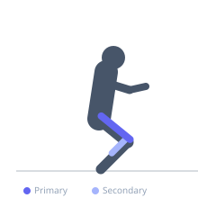
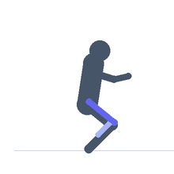

Exercise guide / Smith Machine Sissy Squat
Smith Machine Sissy Squat
A sissy squat variation performed with the Smith machine bar resting across the front of the thighs, with heels elevated on a plate or wedge. The machine guides the movement and reduces balance demand, allowing heavy quad isolation with the knees traveling far forward — a position that maximally stretches and loads the rectus femoris and vastus lateralis.
Primary muscles
rectus femoris
vastus lateralis
vastus medialis
Secondary muscles
vastus intermedius
gastrocnemius medial
Stabilizers
transverse abdominis
Equipment
Smith Machine
Weight Plates


Starting position
- Stand facing away from the Smith machine with the bar set at approximately thigh height. Place heels on a 25lb plate. Bar rests lightly across upper thighs.
Setup
- Set the Smith bar at thigh height. Place a 25lb plate flat behind the foot position for heel elevation. Duck under the bar and position it across the upper thighs.
Steps
- Step 1: Lean back slightly with a rigid torso, engaging the quads.
- Step 2: Allow the knees to travel forward over and past the toes while your hips drop toward the floor.
- Step 3: Lower until a strong quad stretch is felt, or as far as comfortable knee health allows.
- Step 4: Reverse the motion by driving the knees back and straightening to the upright position.
Coaching cues
- Keep the torso rigid throughout
- Let the knees lead forward
Breathing
- Inhale on the descent. Exhale during the return to upright.
Range of motion
- Lower until a strong quad stretch is felt. The knees travel well past the toes — this is intentional for this exercise.
Tempo
- 3-1-2-0
Common mistakes
- Collapsing the lower back — maintain a rigid torso throughout
- Using excessive range before the tendons have adapted
Safety
- Avoid if you have patellar tendinopathy or significant knee pain
- Progress depth gradually over several weeks
Training
- hypertrophy: 8–15 reps
- hypertrophy: 3–4 sets
- Rest: {'hypertrophy': 90}